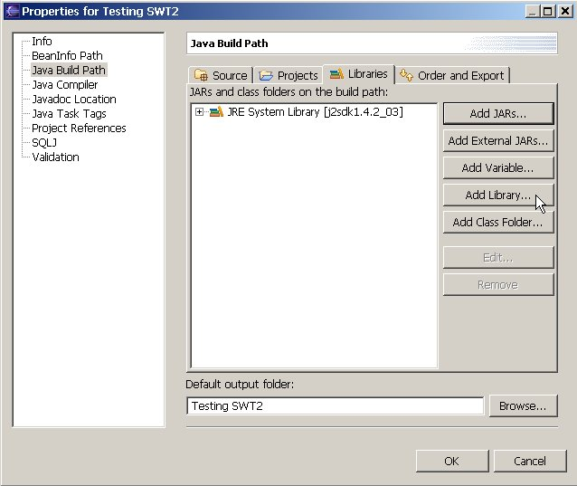
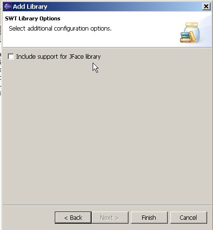

How
to add the SWT library to an existing Java Project
Select the Java Project in the Package Explorer.
Bring up the context menu (mouse button 2) and select Properties
Select Java Build Path from
the list on the left.
Switch to the Libraries tab
Press the Add Library... button

Select
Standard Widget Toolkit (SWT)
and press the Next button.
If you'd like to work with the JFace library, check Include support for JFace library.
(usually not necessary).

Press Finish, then OK.
The SWT Library is now added to the project, and you can use VE to
manipulate SWT Visual Classes within this project.